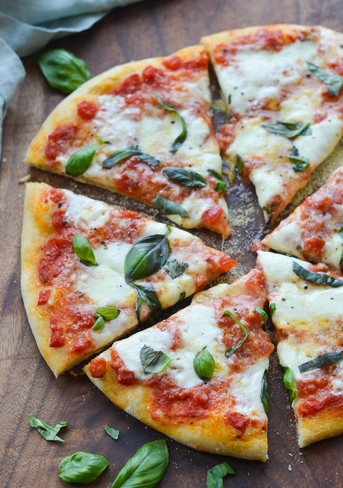

Margherita Pizza

Nothing is better than pizza. With this recipe, you can eat like an Italian.
Ingredients
- Pizza Dough (Preferably, homemade)
- San Marzano tomatoes
- Fresh mozzarella ball
- Parmigiano Reggiano
- Olive Oil
- Garlic
- Salt and Pepper
- Sugar
- Cornmeal Flour
Steps
- Mix to combine the tomatoes, olive oil, garlic, pepper, salt, and sugar into a small bowl
- On lightly floured surface, stretch and press one ball of dough into an 11 inch round pizza before transferring the dough to a cornmeal-dusted bakingg sheet
- Spread 1/2 cup of the sauce over the dough, leaving a 1/2 inch border around the edges
- Bake for 7 minutes until the crust is partially cooked
- Scatter 1/2 of the Parmigiano Reggiano over the sauce before scattering mozzarella cubes
- Cook for another 4 minutes or until the crust is golden brown and the cheese is melted
- Sprinkle the pizza with basil before letting it cool for 5 minutes
- Slice and serve after cooling. Enjoy!